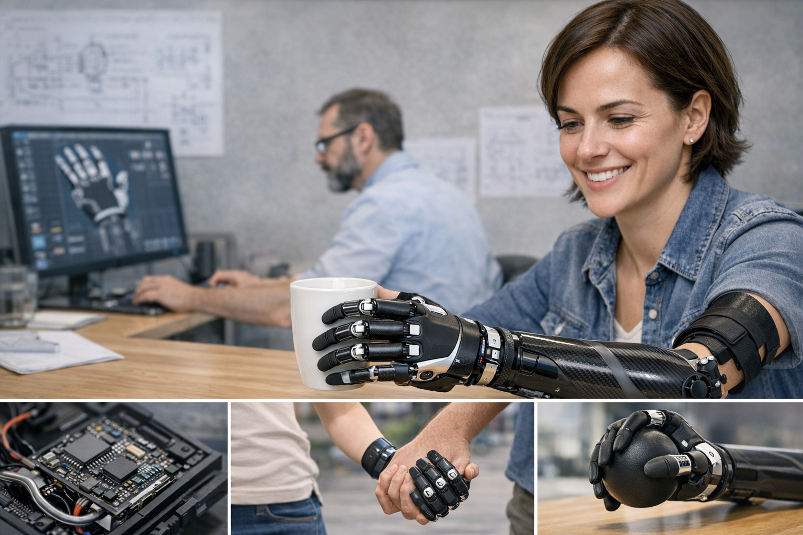
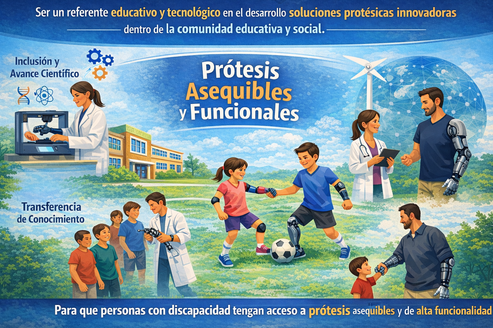

Desarrollar una prótesis de mano accesible, funcional y biomecánicamente avanzada, que permita a personas con amputaciones recuperar movimientos naturales, mejorar su calidad de vida y fortalecer su independencia, mediante el uso innovador de tecnología, diseño ergonómico y enfoque humanitario.
Proyecto DEXTER: Prótesis de Mano Robótica
DEXTER es un proyecto escolar innovador enfocado en el desarrollo de una prótesis de mano robótica capaz de replicar movimientos reales de la mano humana mediante el uso de sensores, programación y diseño tecnológico.
Nuestro objetivo es integrar conocimientos de electrónica, programación y diseño 3D para crear una solución funcional, accesible y orientada a mejorar la calidad de vida de personas con amputaciones, al mismo tiempo que fomentamos el aprendizaje práctico y el trabajo en equipo.

Misión

Visión
Ser un referente educativo y tecnológico en el desarrollo de soluciones protésicas innovadoras dentro de la comunidad educativa y social, promoviendo la inclusión, el avance científico y la transferencia de conocimiento para que personas con discapacidad tengan acceso a prótesis asequibles y de alta funcionalidad.

Historia
El proyecto DEXTER surge como una iniciativa escolar motivada por el interés en la tecnología y su aplicación en la solución de problemas reales. Desde el inicio el objetivo fue comprender cómo la ingeniería y la programación pueden contribuir a mejorar la calidad de vida de las personas que han perdido una mano.
Durante la etapa de investigación el equipo analizó el funcionamiento de la mano humana y los movimientos básicos que permiten realizar acciones cotidianas como sujetar objetos o realizar gestos simples. Este análisis permitió identificar la complejidad del sistema muscular y articular que debía ser replicado de forma artificial.
Con estos conocimientos se inició el diseño de una prótesis de mano robótica desarrollada con materiales accesibles y tecnología de bajo costo. Mediante el uso de impresión 3D, sensores y programación se logró crear un sistema capaz de detectar movimientos reales de la mano y reproducirlos de manera controlada en la prótesis.
El desarrollo del proyecto también fortaleció el aprendizaje práctico de los estudiantes en áreas como electrónica, diseño digital y programación. Al mismo tiempo fomentó el trabajo en equipo, la responsabilidad y la conciencia social sobre la importancia de la tecnología inclusiva.
Actualmente DEXTER representa un proyecto en constante evolución que combina innovación, educación y compromiso social. Su propósito es seguir mejorando el diseño y la funcionalidad de la prótesis manteniendo siempre un enfoque humano y educativo.